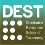

Society of Systematic Biologists
Home of Systematic Biology
Popular contentSyndicateCategories
User loginNavigationWho's onlineThere are currently 0 users and 4 guests online.
|
Upcoming courses within Distributed European School of Taxonomy Upcoming courses within the Modern Taxonomy programme:
Upcoming courses within the Expert-in-training programme:
Have a look now as registration deadlines are getting near! Mathematical and Computational Evolutionary Biology June 18-22, 2012, Hameau de l'Etoile (France)
The subject is evolution, which is considered at different scales, from genes to populations. The focus is on the mathematical and computational tools and concepts, which form an essential basis of evolutionary studies. The rise of sound statistical and combinatorial approaches in evolutionary biology has seen considerable improvements of the original ad hoc methods and the ability of the new methods and algorithms to handle ever-larger data sets. Such advances involve increasingly sophisticated mathematical treatment of the problems at hand and the reliance on faster algorithms and powerful computers to answer important biological questions. To present these advances and to discuss open questions and problems, the meeting will bring together researchers originating from various disciplines: mathematics, computer science, phylogenetics and population genetics. Ten keynote speakers, two each morning, will introduce a field of research and discuss their own work in this field. Afternoon will be for short presentations and posters, with plenty of time for discussions. We will stop early every day, thus leaving time for hiking and visits. The number of attendees will be limited to favor exchanges (~60). University of Sao Paulo - Brazil: Faculty Positions â�" Developmental Biology and Zoology
Tenure-track position in Herpetology at University of Wisconsin-Stevens PointThe Department of Biology, University of Wisconsin-Stevens Point, has a tenure-track, nine-month faculty position in Herpetology-(Assistant Professor), beginning August 2012. Teaching assignment includes courses in Herpetology, Evolution, Introductory Biology, and Senior Seminar. Research with undergraduates, department service, and student advising are expected. PhD with emphasis in appropriate area required for tenure. Teaching and research experience are required. Experience may include grants, publications, evidence of teaching excellence, and postdoctoral work. We seek applicants from underrepresented groups. Terrestrial Vertebrate Biologist at California State University, Long Beach
Postdoctoral Position at the University of S�£o Paulo (USP)
Tenure Position National University of Singapore
Assistant Professor in Systematics, Department of Biology, University of VermontThe Department of Biology of the University of Vermont seeks applications for a tenure- track Assistant Professor position in Systematics and Evolutionary Biology of arthropods, especially insects. The position will be open in the fall of 2012. The successful candidate will have expertise in classical and molecular systematics, including analysis of complex data sets. Candidates pursuing phylogenomics and innovative methods in bioinformatics in combination with taxonomy are especially encouraged to apply. Department information at: http://www.uvm.edu/~biology. Call for Symposia for the 2012 SSB Annual Meeting, Ottawa, CanadaThe Society of Systematic Biologists invites proposals for symposia at the 2012 Evolution meeting to be held in Ottawa, Ontario, Canada from 6-10 July 2012. Deadline: for full consideration, please submit proposals by Sept 15, 2011. Proposals should include (1) a descriptive title, (2) one or two paragraphs explaining the purpose of the symposium and its relevance to systematics, (3) a list of presentations including proposed speakers, their institutions or affiliations, and their presentation titles, and (4) an indication of whether the speakers have been invited and whether they have agreed to participate. Graduate Assistantships: Systematics of North American water mites at University of ArkansasTwo NSF-funded PhD positions are available to work on a systematic revision of North American water mites in the family Torrenticolidae with Dr. Ashley Dowling at the University of Arkansas in the Department of Entomology. The project starts in January 2012 and is in collaboration with Dr. Andrea Radwell (Univ. of Arkansas) and Dr. Ian Smith (Canadian National Collection). |
Latest issue
EVOLDIRphylobabble.orgiPhyloPhyloseminarSystematics AssociationNESCentThe Genealogical World of Phylogenetic NetworksCiteULike PhylogenyEvolutionary Bioinformatics
CladisticsBMC Evolutionary Biology
Molecular Biology and Evolution |
 Follow us on Twitter
Follow us on Twitter Find us on Facebook
Find us on Facebook Olivier Gascuel and Jean-Michel Marin are co-=chairing a meeting on Mathematical and Computational Evolutionary Biology to be held June 18-22 at Hameau de l'Etoile in France. See website (
Olivier Gascuel and Jean-Michel Marin are co-=chairing a meeting on Mathematical and Computational Evolutionary Biology to be held June 18-22 at Hameau de l'Etoile in France. See website (
 The Department of Biological Sciences at California State University, Long Beach invites applications for a terrestrial vertebrate biologist at the Assistant Professor level. We seek broadly trained individuals who address fundamental research questions in these areas and have a strong interest in teaching at a research-oriented, comprehensive university. Review of applications will commence December 12, 2011. Position open until filled. For further information please see the position description at
The Department of Biological Sciences at California State University, Long Beach invites applications for a terrestrial vertebrate biologist at the Assistant Professor level. We seek broadly trained individuals who address fundamental research questions in these areas and have a strong interest in teaching at a research-oriented, comprehensive university. Review of applications will commence December 12, 2011. Position open until filled. For further information please see the position description at